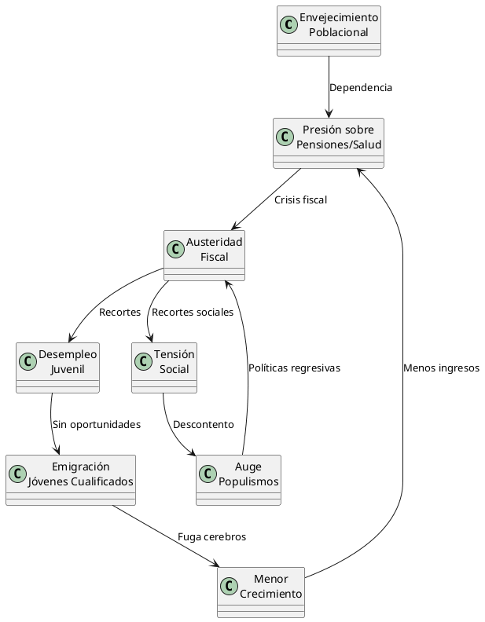
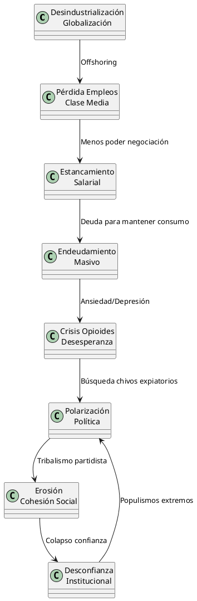
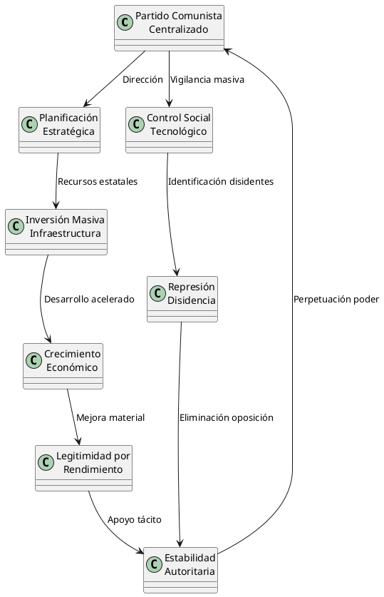
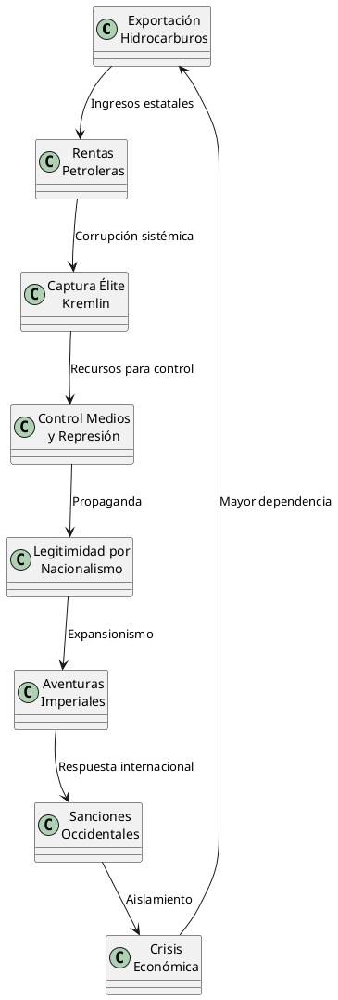
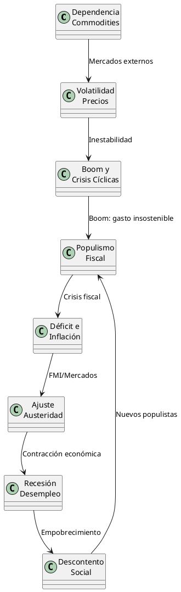
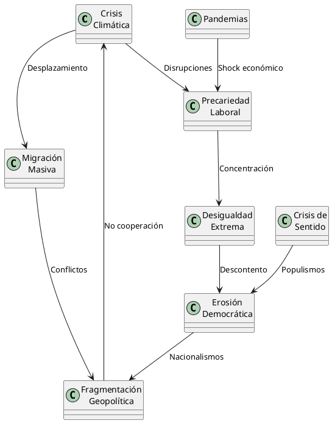

Bloques Geopolíticos del Siglo XXI: Transformaciones del Bienestar y Desarrollo Social (2000-2025)
Bloques Geopolíticos del Siglo XXI: Transformaciones del Bienestar y Desarrollo Social (2000-2025)
Introducción: El Mundo Post-Guerra Fría
El siglo XXI inauguró una nueva era geopolítica tras el colapso del bloque soviético. La supuesta "victoria definitiva" del capitalismo liberal democrático, proclamada por Francis Fukuyama como "el fin de la historia", resultó ser prematura. En su lugar, emergió un mundo multipolar caracterizado por:
- El ascenso vertiginoso de China como potencia económica global
- La resurgencia de Rusia bajo el autoritarismo de Putin
- La crisis y transformación del modelo europeo de bienestar
- El estancamiento relativo de Estados Unidos y crecientes divisiones internas
- La heterogeneidad creciente de América Latina entre modelos progresistas y neoliberales
- La emergencia del Sur Global (India, Brasil, Sudáfrica, Indonesia)
Este análisis examina cómo estos bloques y regiones han evolucionado en las primeras décadas del siglo XXI respecto al bienestar ciudadano, desarrollo social, salud, demografía, desarrollo intelectual y satisfacción subjetiva.
Metodología y Parámetros de Análisis
Dimensiones Evaluadas
Mantenemos las seis dimensiones del análisis anterior, actualizadas para el siglo XXI:
- Bienestar Material: Ingreso real, acceso a vivienda, tecnología, consumo
- Salud Pública: Esperanza de vida, mortalidad infantil, enfermedades crónicas, salud mental
- Desarrollo Intelectual: Educación terciaria, producción científica, innovación tecnológica
- Desarrollo Demográfico: Envejecimiento, migraciones, estructura poblacional
- Libertades y Gobernanza: Democracia, Estado de derecho, corrupción, derechos humanos
- Sostenibilidad y Bienestar Subjetivo: Impacto ambiental, felicidad reportada, ansiedad
Nuevos Factores del Siglo XXI
El análisis incorpora fenómenos específicos de esta era:
- Digitalización: Acceso a internet, brecha digital, vigilancia tecnológica
- Globalización financiera: Integración económica, vulnerabilidad a crisis sistémicas
- Crisis climática: Vulnerabilidad ambiental, políticas de mitigación
- Polarización política: Erosión de consensos, auge de populismos
- Pandemias: COVID-19 como test de resiliencia sistémica
Unión Europea: Crisis y Resiliencia del Modelo Social Europeo
Matriz de Evolución (2000-2025)
| Indicador | 2000 | 2010 | 2025 | Tendencia |
|---|---|---|---|---|
| Esperanza de vida (años) | 77.9 | 80.3 | 82.1 | Positiva |
| Mortalidad infantil (‰) | 5.3 | 4.0 | 3.2 | Muy buena |
| Educación superior (%) | 28.0 | 34.0 | 42.0 | Excelente |
| PIB per cápita ($ 2020) | 28,450 | 32,180 | 38,920 | Moderada |
| Desempleo (%) | 8.2 | 10.1 | 6.8 | Volátil |
| Coef. Gini (desigualdad) | 0.30 | 0.31 | 0.33 | Deterioro |
| Satisfacción de vida (0-10) | 7.2 | 7.0 | 6.9 | Declive leve |
| Acceso internet (%) | 35.0 | 70.0 | 92.0 | Excelente |
| Emisiones CO₂ per cápita (ton) | 9.2 | 8.1 | 6.8 | Positiva |
| Confianza institucional (%) | 48.0 | 38.0 | 42.0 | Recuperación |
Análisis de la Trayectoria Europea
La Crisis Financiera (2008-2012) y sus Secuelas
La crisis financiera global de 2008 golpeó duramente a Europa. La crisis de deuda soberana que siguió (2010-2012) especialmente en países mediterráneos (Grecia, España, Portugal, Italia) expuso fragilidades estructurales de la eurozona: moneda común sin unión fiscal, desequilibrios comerciales crónicos, rigideces regulatorias.
Las políticas de austeridad impuestas por la Troika (BCE, Comisión Europea, FMI) devastaron los sistemas de bienestar en países periféricos. Grecia vio su PIB contraerse 25%, el desempleo juvenil superar el 50%, y la emigración masiva de jóvenes cualificados. España e Italia experimentaron recortes dramáticos en sanidad, educación y protección social.
Sin embargo, los países del norte (Alemania, Países Bajos, Escandinavia) mantuvieron relativamente intactos sus sistemas de bienestar. Esta divergencia norte-sur profundizó tensiones dentro de la UE.
Desafíos Demográficos: El Envejecimiento Acelerado
Europa enfrenta el envejecimiento poblacional más acelerado del mundo. La proporción de mayores de 65 años pasó de 16% (2000) a 21% (2025). La tasa de dependencia (población inactiva/activa) aumentó dramáticamente.
Esto genera presiones insostenibles sobre sistemas de pensiones y salud. Los países responden con: aumento de edad de jubilación (67-68 años en varios países), inmigración (controversial política y socialmente), e incentivos a la natalidad (mayormente inefectivos).
La inmigración, necesaria económicamente, genera tensiones sociales explotadas por partidos de extrema derecha. La crisis migratoria de 2015 (1+ millones de refugiados sirios y afganos) polarizó sociedades europeas.
Logros en Sostenibilidad y Transición Verde
Europa lidera globalmente en políticas climáticas. El Acuerdo Verde Europeo (European Green Deal, 2019) compromete a la UE a neutralidad de carbono para 2050. Las emisiones per cápita cayeron 26% entre 2000 y 2025.
Las energías renovables pasaron de 6% (2000) a 42% (2025) de la generación eléctrica. Alemania, España y Dinamarca lideran la transición. Sin embargo, la dependencia energética (gas ruso hasta 2022) expuso vulnerabilidades geopolíticas.
Erosión Democrática y Auge de Populismos
Varios países europeos experimentan retrocesos democráticos. Hungría bajo Orbán y Polonia bajo el PiS implementaron reformas que erosionan independencia judicial, libertad de prensa y derechos de minorías.
El Brexit (2016-2020) representó el primer abandono de la UE, exponiendo euroscepticismo profundo. Partidos populistas de derecha (Le Pen en Francia, Meloni en Italia, Wilders en Países Bajos) ganaron apoyos significativos explotando ansiedad económica, rechazo a inmigración y nostalgia nacionalista.
La invasión rusa de Ucrania (2022) ironicamente revitalizó cohesión europea, pero a costa de aumento en gasto militar y vulnerabilidad energética.
Bienestar Subjetivo: Ansiedad en la Abundancia
A pesar de indicadores objetivos relativamente buenos, los europeos reportan ansiedad creciente. Las encuestas muestran:
- Preocupación por inestabilidad económica (trabajo precario, vivienda inasequible)
- Ansiedad climática, especialmente entre jóvenes
- Desconfianza en instituciones políticas
- Soledad epidémica (especialmente post-COVID)
- Presión por rendimiento constante en economías competitivas
La satisfacción de vida cayó marginalmente de 7.2 (2000) a 6.9 (2025), con caídas más pronunciadas en países del sur afectados por austeridad.
Diagrama: Círculo Vicioso de la Crisis Europea

Estados Unidos: Superpotencia en Declive Relativo
Matriz de Evolución (2000-2025)
| Indicador | 2000 | 2010 | 2025 | Tendencia |
|---|---|---|---|---|
| Esperanza de vida (años) | 76.8 | 78.7 | 76.4 | Declive |
| Mortalidad infantil (‰) | 6.9 | 6.1 | 5.4 | Lenta mejora |
| Educación superior (%) | 38.0 | 42.0 | 48.0 | Positiva |
| PIB per cápita ($ 2020) | 44,980 | 50,520 | 63,540 | Fuerte |
| Cobertura salud (%) | 86.0 | 84.0 | 91.0 | Mejora ACA |
| Coef. Gini (desigualdad) | 0.41 | 0.44 | 0.48 | Muy negativa |
| Satisfacción de vida (0-10) | 7.4 | 7.0 | 6.7 | Declive |
| Muertes por violencia (‰) | 10.2 | 12.1 | 14.8 | Muy negativa |
| Encarcelamiento (por 100k) | 683 | 740 | 664 | Alta (mejora) |
| Polarización política (índice) | 0.45 | 0.62 | 0.78 | Crisis |
Análisis de la Trayectoria Estadounidense
La Paradoja del Crecimiento sin Bienestar
Estados Unidos mantiene el PIB per cápita más alto entre economías avanzadas, liderando innovación tecnológica (Silicon Valley), finanzas globales (Wall Street) y proyección militar. Sin embargo, este crecimiento no se traduce en bienestar generalizado.
La desigualdad alcanzó niveles no vistos desde los años 20. El 1% superior captura el 20% del ingreso nacional, mientras los salarios reales de la clase trabajadora se estancaron durante décadas. La movilidad social ascendente, mito fundacional estadounidense, cayó dramáticamente: solo el 50% de nacidos en 1980 ganan más que sus padres, comparado con 90% en generaciones previas.
Crisis de Salud Pública: El Caso Excepcional
Estados Unidos es el único país desarrollado donde la esperanza de vida cayó en el siglo XXI. Tres crisis superpuestas explican este fenómeno:
- Epidemia de opioides: Sobreprescripción médica de analgésicos opioides (OxyContin), adicción masiva, transición a heroína y fentanilo. Más de 500,000 muertes por sobredosis entre 2000-2025.
- Obesidad y enfermedades metabólicas: 42% de adultos obesos (2025), generando epidemias de diabetes tipo 2, enfermedades cardiovasculares, cáncer.
- "Muertes por desesperanza": Suicidios y alcoholismo, especialmente entre hombres blancos de clase trabajadora en regiones desindustrializadas (Rust Belt, Appalachia).
El sistema de salud, más caro del mundo (17% del PIB), produce resultados mediocres. 28 millones permanecen sin seguro a pesar del Obamacare (ACA, 2010). Los costos médicos son la principal causa de bancarrota.
Violencia Armada y Militarización Social
Estados Unidos experimenta niveles de violencia armada incomparables en el mundo desarrollado. Con 400+ millones de armas civiles (más que habitantes), las muertes por armas de fuego (homicidios, suicidios, accidentes) alcanzan 45,000 anuales.
Los tiroteos masivos (mass shootings) en escuelas, iglesias, centros comerciales se normalizaron trágicamente. A pesar del clamor ciudadano, el poder del lobby armamentista (NRA) bloquea reformas legislativas.
La militarización policial post-11/9 y el sesgo racial sistemático generan tensiones explosivas. El movimiento Black Lives Matter (BLM, 2013-presente) visibilizó brutalidad policial contra afroamericanos, culminando en protestas masivas tras el asesinato de George Floyd (2020).
Polarización Política Extrema
La división partidista alcanzó niveles no vistos desde la Guerra Civil. Republicanos y Demócratas no solo disienten en políticas sino en hechos básicos de la realidad. Las burbujas informativas (Fox News vs. MSNBC, redes sociales algorítmicas) refuerzan visiones de mundo incompatibles.
La presidencia de Trump (2017-2021) aceleró polarización: retórica incendiaria, deslegitimación de instituciones, "fake news", nacionalismo blanco. El asalto al Capitolio (6 enero 2021) expuso fragilidad democrática.
La administración Biden (2021-2025) logró cierta recuperación económica pero no sanó divisiones culturales. La agenda progresista (climate action, derechos trans, justicia racial) genera reacción conservadora feroz.
Bienestar Subjetivo en Crisis
A pesar de riqueza material, los estadounidenses reportan niveles crecientes de infelicidad:
- Soledad epidémica: 60% reporta sentirse solo frecuentemente
- Ansiedad y depresión, especialmente entre jóvenes (Gen Z)
- Inseguridad económica: 40% no puede cubrir un gasto inesperado de $400
- Desconfianza institucional: menos del 20% confía en el Congreso
- Nihilismo cultural: pérdida de narrativas compartidas de sentido
La satisfacción de vida cayó de 7.4 (2000) a 6.7 (2025), con caídas más pronunciadas entre trabajadores sin educación universitaria.
Diagrama: Fragmentación del Sueño Americano

China: Ascenso a Superpotencia con Características Autoritarias
Matriz de Evolución (2000-2025)
| Indicador | 2000 | 2010 | 2025 | Tendencia |
|---|---|---|---|---|
| Esperanza de vida (años) | 71.4 | 75.2 | 78.6 | Excelente |
| Mortalidad infantil (‰) | 30.0 | 13.0 | 5.2 | Notable |
| Educación superior (%) | 8.0 | 24.0 | 58.0 | Extraordinaria |
| PIB per cápita ($ 2020) | 3,580 | 10,220 | 19,340 | Explosiva |
| Población en pobreza extrema (%) | 49.0 | 16.0 | 0.3 | Erradicación |
| Coef. Gini (desigualdad) | 0.40 | 0.47 | 0.46 | Alta estable |
| Libertad de prensa (0-100) | 18.0 | 12.0 | 9.0 | Represión |
| Vigilancia digital (índice) | 15.0 | 45.0 | 89.0 | Totalitaria |
| Emisiones CO₂ per cápita (ton) | 2.7 | 6.2 | 8.1 | Muy negativa |
| Producción científica (% global) | 5.0 | 12.0 | 21.0 | Liderazgo |
Análisis del Modelo Chino
El Milagro Económico Más Grande de la Historia
China sacó a 850 millones de personas de la pobreza extrema entre 1980 y 2025, el mayor logro de desarrollo humano jamás registrado. El crecimiento económico promedio del 9% anual (2000-2010) y 6% (2010-2025) transformó un país rural empobrecido en la segunda economía mundial (primera en paridad de poder adquisitivo desde 2014).
La urbanización masiva trasladó 500 millones de personas del campo a las ciudades en 25 años. Las megaciudades chinas (Shanghai, Beijing, Shenzhen, Guangzhou) rivalizan con cualquier metrópolis global en infraestructura y tecnología.
Las inversiones masivas en infraestructura (trenes de alta velocidad conectando el país, puertos de última generación, redes 5G) crearon capacidades productivas sin precedentes. La Iniciativa del Cinturón y la Ruta (Belt and Road Initiative, BRI, desde 2013) proyecta influencia china globalmente mediante infraestructura y comercio.
Transformación Educativa y Científica
China pasó de producir el 5% de publicaciones científicas globales (2000) al 21% (2025), superando a Estados Unidos. Las universidades chinas escalaron rankings globales. El país lidera en inteligencia artificial, tecnología 5G, energía solar, y biotecnología.
El acceso a educación superior pasó del 8% (2000) al 58% (2025), una expansión vertiginosa. 10+ millones de estudiantes se gradúan anualmente de universidades, más que Estados Unidos y Europa combinados.
Sin embargo, el énfasis en STEM y aplicación tecnológica va acompañado de control ideológico estricto en humanidades y ciencias sociales. El "pensamiento de Xi Jinping" es asignatura obligatoria. La censura académica limita investigación en temas sensibles (Tíbet, Xinjiang, Tiananmen, Taiwan).
Salud Pública: Logros y Limitaciones
La esperanza de vida aumentó 7 años entre 2000 y 2025, alcanzando niveles de países desarrollados. La mortalidad infantil cayó dramáticamente. El sistema de salud se expandió significativamente, aunque persisten disparidades urbano-rurales.
Sin embargo, emergen nuevos desafíos: envejecimiento acelerado (consecuencia de la política de hijo único, abolida en 2016), epidemias de diabetes y enfermedades cardiovasculares por cambios dietéticos, contaminación atmosférica devastadora en ciudades industriales.
La gestión inicial de COVID-19 en Wuhan (diciembre 2019) fue desastrosa: censura de médicos alertadores, ocultamiento de información, permitiendo propagación global. Sin embargo, posteriormente China implementó política de "COVID cero" (confinamientos drásticos, rastreo masivo) hasta su abandono caótico en diciembre 2022.
El Estado de Vigilancia Tecnológica
China desarrolló el sistema de vigilancia más sofisticado de la historia humana. El "Sistema de Crédito Social" (en desarrollo desde 2014) monitorea comportamiento ciudadano mediante: reconocimiento facial ubicuo, monitoreo de redes sociales, rastreo de transacciones financieras, integración de bases de datos estatales.
Las cámaras de vigilancia (626 millones instaladas, 2025) con inteligencia artificial identifican individuos, analizan comportamientos, predicen "riesgos sociales". La censura de internet (Great Firewall) bloquea acceso a información externa. Las VPN son ilegales.
Este aparato se despliega brutalmente en Xinjiang contra la minoría uigur: campos de "reeducación" (internamiento masivo), vigilancia total, supresión cultural, esterilizaciones forzadas. Organizaciones internacionales denuncian genocidio cultural, posiblemente crímenes contra la humanidad.
Autoritarismo Consolidado bajo Xi Jinping
Xi Jinping, en el poder desde 2012, consolidó control personal eliminando límites de mandatos (2018), purgando rivales mediante campañas "anticorrupción", y centralizando poder en grado no visto desde Mao.
Las libertades se contrajeron dramáticamente: represión de activistas de derechos humanos, abogados, periodistas, académicos; supresión del movimiento prodemocracia de Hong Kong (Ley de Seguridad Nacional 2020), eliminando la autonomía prometida; amenazas crecientes contra Taiwan; nacionalismo agresivo ("China ha puesto de pie").
El Partido Comunista penetra todas las esferas: empresas privadas obligadas a tener células partidistas, regulación draconiana de tecnológicas (represión de Jack Ma y Alibaba 2020-2021), control ideológico de entretenimiento y educación.
Bienestar Subjetivo: Mejora Material vs. Ausencia de Libertades
La percepción ciudadana es difícil de evaluar en un régimen autoritario. Las encuestas oficiales muestran alta satisfacción (80%+), pero su fiabilidad es cuestionable bajo censura y miedo.
Estudios indirectos sugieren:
- Satisfacción con mejoras materiales tangibles (vivienda, consumo, movilidad)
- Orgullo nacionalista por ascenso de China
- Ansiedad por competencia despiadada (educación, trabajo)
- Frustración entre jóvenes educados por oportunidades limitadas y control social
- Miedo omnipresente a represión política
La emigración de élites chinas a Occidente (especialmente tras COVID y represión en Hong Kong) sugiere insatisfacción significativa entre quienes pueden elegir.
Diagrama: Modelo de Desarrollo Autoritario Chino

Rusia: Autoritarismo Petroestatal y Nostalgia Imperial
Matriz de Evolución (2000-2025)
| Indicador | 2000 | 2010 | 2025 | Tendencia |
|---|---|---|---|---|
| Esperanza de vida (años) | 65.3 | 69.0 | 72.8 | Mejora |
| Mortalidad infantil (‰) | 15.3 | 10.0 | 4.9 | Buena |
| Educación superior (%) | 52.0 | 54.0 | 58.0 | Alta estable |
| PIB per cápita ($ 2020) | 8,560 | 15,640 | 11,230 | Declive post-2014 |
| Dependencia hidrocarburos (% exp) | 55.0 | 68.0 | 62.0 | Estructural |
| Libertad de prensa (0-100) | 29.0 | 20.0 | 7.0 | Represión total |
| Emigración anual (miles) | 45 | 35 | 250 | Fuga masiva |
| Gasto militar (% PIB) | 3.8 | 3.9 | 5.9 | Militarización |
| Corrupción (índice 0-100) | 21.0 | 21.0 | 26.0 | Endémica |
| Confianza en Putin (%) | 65.0 | 75.0 | 78.0 | Culto personal |
Análisis del Sistema Putinista
Del Caos de los 90 a la Autocracia Rentista
Vladimir Putin llegó al poder (2000) prometiendo restaurar el orden tras el caos de los 90 (colapso económico, criminalidad, humillación geopolítica). Los altos precios del petróleo (2000-2008, 2010-2014) permitieron crecimiento económico, recuperación salarial y consolidación del poder.
Sin embargo, Putin construyó no una democracia sino una autocracia electoral: control de medios, manipulación electoral, represión de oposición, centralización extrema del poder. La élite gobernante (siloviki, hombres de seguridad del entorno de Putin) capturó las rentas petroleras mediante empresas estatales (Gazprom, Rosneft).
La economía rusa permanece dependiente de hidrocarburos, vulnerable a fluctuaciones de precios. Los intentos de diversificación fracasaron. La corrupción sistémica ahuyenta inversión productiva. Las sanciones occidentales post-anexión de Crimea (2014) y especialmente post-invasión de Ucrania (2022) aislaron parcialmente la economía.
Represión Creciente y Oposición Silenciada
Las libertades políticas se erosionaron sistemáticamente. Medios independientes fueron cerrados o capturados por aliados del Kremlin. Periodistas críticos asesinados (Anna Politkovskaya 2006, Boris Nemtsov 2015) o encarcelados. Organizaciones de la sociedad civil reprimidas como "agentes extranjeros".
La oposición política fue sistemáticamente eliminada: encarcelamiento de Alexei Navalny (envenenado con Novichok 2020, encarcelado 2021, muerto en prisión 2024), prohibición de partidos opositores, manipulación electoral garantizando "victorias" abrumadoras de Putin.
Internet, inicialmente espacio de libertad relativa, fue progresivamente censurado. Tras la invasión de Ucrania, el régimen bloqueó redes sociales occidentales, criminalizó "fake news" sobre el ejército (15 años de prisión), forzando autoexilio a miles de activistas, periodistas e intelectuales.
La Aventura Imperial: Ucrania y sus Consecuencias
La anexión de Crimea (marzo 2014) tras el Euromaidan ucraniano generó apoyo nacionalista interno ("Crimea es nuestra") pero aislamiento internacional. Las sanciones occidentales golpearon la economía, que entró en recesión.
La invasión total de Ucrania (24 febrero 2022) marcó un punto de inflexión. Putin esperaba una victoria rápida. En cambio, enfrentó resistencia ucraniana feroz, apoyo occidental masivo a Ucrania, sanciones occidentales sin precedentes (congelación de reservas, exclusión de SWIFT, embargo energético), y una guerra de desgaste costosa.
Las consecuencias para Rusia son devastadoras:
- Cientos de miles de muertos y heridos (estimaciones: 200,000-350,000)
- Emigración masiva de jóvenes educados (750,000+ entre 2022-2024)
- Economía en guerra: militarización extrema desviando recursos
- Aislamiento internacional, dependencia de China
- Represión interna totalitaria para sofocar disidencia
Sociedad en Transformación: Entre Propaganda y Realidad
La sociedad rusa muestra profundas divisiones generacionales. Los mayores, socializados en la URSS, apoyan mayoritariamente a Putin, nostálgicos del poder soviético y receptivos a propaganda nacionalista. Los jóvenes urbanos educados son más críticos, pero muchos emigraron o se autocensuran por miedo.
La esperanza de vida mejoró significativamente respecto a los 90, cuando la mortalidad masculina alcanzó niveles catastróficos. Sin embargo, persisten problemas: alcoholismo endémico, VIH/SIDA, tuberculosis.
La percepción ciudadana del bienestar es contradictoria: orgullo nacionalista convive con ansiedad económica, mejoras materiales modestas conviven con ausencia total de libertades. Las encuestas muestran apoyo a Putin del 70-80%, pero su fiabilidad bajo autoritarismo es cuestionable.
Diagrama: Petro-Estado Autoritario Ruso

América Latina: Entre Progresismo y Regresión Neoliberal
Matriz Regional de Evolución (2000-2025)
| Indicador | 2000 | 2010 | 2025 | Tendencia |
|---|---|---|---|---|
| Esperanza de vida (años) | 71.5 | 74.2 | 76.8 | Positiva |
| Mortalidad infantil (‰) | 28.0 | 18.0 | 12.5 | Buena mejora |
| Educación superior (%) | 18.0 | 28.0 | 38.0 | Positiva |
| PIB per cápita ($ 2020) | 7,840 | 10,250 | 11,120 | Estancada |
| Población en pobreza (%) | 42.0 | 29.0 | 32.0 | Retroceso |
| Coef. Gini (desigualdad) | 0.54 | 0.50 | 0.46 | Mejora |
| Homicidios (por 100k) | 25.0 | 24.0 | 21.0 | Leve mejora |
| Confianza institucional (%) | 28.0 | 35.0 | 22.0 | Colapso |
| Deforestación Amazonía (%) | 15.0 | 17.0 | 20.0 | Crisis |
| Acceso internet (%) | 10.0 | 35.0 | 68.0 | Rápida |
Análisis de la Heterogeneidad Latinoamericana
La Marea Rosa (2000-2015): Experimentos Progresistas
La primera década del siglo XXI vio el ascenso de gobiernos de centro-izquierda en la región: Lula en Brasil (2003-2010), Kirchner en Argentina (2003-2015), Chávez en Venezuela (1999-2013), Morales en Bolivia (2006-2019), Correa en Ecuador (2007-2017).
Estos gobiernos implementaron políticas redistributivas aprovechando el boom de commodities (precios altos de soja, petróleo, minerales): programas de transferencias condicionadas (Bolsa Família en Brasil, reduciendo pobreza de 34% a 21%), aumentos salariales, expansión educativa y de salud, recuperación del rol estatal.
Brasil bajo Lula sacó a 40 millones de pobreza. Bolivia redujo pobreza extrema del 38% al 17%. Argentina recuperó crecimiento tras el colapso de 2001. La desigualdad regional cayó del Gini 0.54 (2000) a 0.50 (2010).
Sin embargo, estos modelos mostraron limitaciones: dependencia del boom de commodities (insostenible cuando los precios cayeron post-2014), corrupción sistémica (Lava Jato en Brasil exponiendo escándalos masivos), caudillismo y erosión institucional (Venezuela deslizándose hacia dictadura bajo Maduro post-2013), insuficiente diversificación productiva.
El Giro Conservador (2015-2020)
La caída de precios de commodities (2014) y escándalos de corrupción facilitaron giro conservador: Macri en Argentina (2015-2019), Temer y Bolsonaro en Brasil (2016-2022), golpes en Honduras (2009) y Bolivia (2019), restauración neoliberal.
Estos gobiernos implementaron austeridad, recortes sociales, privatizaciones, reforma laboral regresiva. Los resultados fueron desalentadores: estancamiento económico, aumento de pobreza, descontento masivo.
Brasil bajo Bolsonaro (2019-2022) vivió desastre multidimensional: gestión catastrófica de COVID (670,000 muertos, negacionismo presidencial), colapso ambiental (deforestación Amazonía disparada), retórica autoritaria amenazando democracia, estancamiento económico.
Argentina sufrió crisis recurrentes: default de deuda (2020), inflación galopante (140% anual en 2023), pobreza escalando al 40%+. La elección de Javier Milei (2023), libertario radical, representa desesperación ante fracasos repetidos de peronismo y macrismo.
Violencia Crónica y Estados Frágiles
América Latina concentra el 8% de la población global pero el 33% de homicidios mundiales. La violencia vinculada al narcotráfico devastó países: México (guerra contra el narco desde 2006, 350,000+ muertos), Centroamérica (maras controlando territorios, estados colapsados), Brasil (55,000+ homicidios anuales).
La "guerra contra las drogas" fracasó espectacularmente. Algunos países experimentan alternativas: Uruguay legalizó cannabis (2013), Colombia implementó justicia transicional post-conflicto FARC.
La violencia genera emigración masiva: caravanas centroamericanas hacia EEUU, venezolanos huyendo de dictadura y colapso económico (7+ millones emigrados, 2015-2025, mayor éxodo hemisférico), desplazamiento interno en Colombia y México.
Crisis Democrática y Desafección Ciudadana
La confianza en instituciones democráticas colapsó. Solo el 22% de latinoamericanos está satisfecho con la democracia (2025). Los parlamentos, partidos políticos y sistemas judiciales son percibidos como corruptos e ineficaces.
Esto alimenta: abstención electoral creciente, protestas masivas (Chile 2019, Colombia 2021, Perú 2022), auge de outsiders populistas (Bukele en El Salvador, Milei en Argentina), erosión de normas democráticas.
El Salvador bajo Bukele ejemplifica el dilema: su "guerra contra pandillas" (estado de excepción desde 2022, 70,000+ arrestos sin debido proceso) redujo dramáticamente homicidios, generando apoyo popular masivo (90%+) a pesar de autoritarismo evidente. Ciudadanos sacrifican libertades por seguridad.
Desigualdad Persistente y Movilidad Social Limitada
A pesar de mejoras (2000-2015), América Latina permanece como la región más desigual del mundo. Las élites capturan beneficios del crecimiento mientras las mayorías sobreviven en economías informales (50%+ de trabajadores).
La educación, teoricamente vía de movilidad social, muestra calidad deficiente. Los resultados PISA ubican a países latinoamericanos en los últimos lugares globales. Las universidades públicas, aunque gratuitas, son inaccesibles para sectores populares por deficiencias educativas previas.
La pandemia COVID-19 revirtió avances sociales: pobreza aumentó de 29% (2019) a 33% (2020), recuperándose parcialmente a 32% (2025). La desigualdad, que había disminuido, se estancó.
Bienestar Subjetivo: Frustración y Nostalgia
Los latinoamericanos expresan frustración profunda. Las encuestas muestran:
- Solo 30% satisfecho con su situación económica
- 65% considera que sus hijos vivirán peor que ellos
- Desconfianza masiva en políticos (5-10% de confianza)
- Percepción de inseguridad omnipresente
- Nostalgia contradictoria por pasados idealizados
La emigración hacia EEUU, Europa o Chile (destino regional) se acelera. Los jóvenes educados, desesperanzados, buscan oportunidades afuera.
Diagrama: Trampa de Ingreso Medio Latinoamericana

Economías Emergentes: India, África Subsahariana, Asia del Sudeste
Matriz Comparativa (2000-2025)
| Indicador / Región | India 2000 | India 2025 | África SS 2000 | África SS 2025 | Asia SE 2000 | Asia SE 2025 |
|---|---|---|---|---|---|---|
| Esperanza vida (años) | 63.0 | 70.8 | 50.3 | 64.2 | 68.0 | 75.2 |
| Mortalidad infantil (‰) | 67.0 | 27.0 | 98.0 | 52.0 | 35.0 | 15.0 |
| Alfabetización (%) | 61.0 | 77.0 | 61.0 | 68.0 | 92.0 | 96.5 |
| PIB per cápita ($ 2020) | 1,950 | 7,330 | 1,440 | 3,920 | 5,120 | 12,450 |
| Acceso electricidad (%) | 56.0 | 99.5 | 26.0 | 48.0 | 78.0 | 95.0 |
| Usuarios internet (%) | 0.7 | 48.0 | 1.0 | 33.0 | 12.0 | 73.0 |
India: El Gigante Heterogéneo
India experimentó crecimiento económico robusto (promedio 7% anual 2000-2025), emergiendo como quinta economía mundial. El sector tecnológico (Bangalore, Hyderabad) es líder global. Cientos de millones salieron de pobreza extrema.
Sin embargo, persisten desafíos monumentales:
- Desigualdad extrema (Gini 0.48)
- 200+ millones en pobreza extrema
- Malnutrición infantil masiva (35% con retraso en crecimiento)
- Contaminación atmosférica catastrófica (Delhi entre las ciudades más contaminadas)
- Tensiones religiosas (hindutva bajo Modi, violencia antimusulmana)
- Sistema de castas persistente
Bajo Modi (2014-presente), India gira hacia nacionalismo hindú, erosionando secularismo constitucional. La democracia se mantiene pero con libertades en contracción: represión de Cachemira, control de medios, intimidación a minorías.
África Subsahariana: Crecimiento con Fragilidad
África experimenta el crecimiento demográfico más rápido del mundo (población pasará de 800 millones en 2000 a 1,500 millones en 2025). Esto representa tanto bono demográfico potencial como enorme desafío.
Logros notables:
- Esperanza de vida aumentó 14 años (impacto de tratamientos VIH)
- Acceso a educación primaria prácticamente universal
- Mortalidad infantil cayó a menos de la mitad
- Crecimiento económico robusto en varios países (Etiopía, Ruanda, Ghana)
- Expansión de telefonía móvil y servicios financieros digitales
Desafíos persistentes:
- Pobreza extrema concentrada (400+ millones)
- Estados frágiles y conflictos (Sahel, Cuerno de África, Congo)
- Cambio climático (sequías, desertificación)
- Dependencia de exportaciones primarias
- Corrupción y mal gobierno
- Infraestructura deficiente
La influencia china crece mediante BRI (infraestructura a cambio de recursos), generando dependencia y controversia.
Asia del Sudeste: Éxito Relativo con Excepciones
La región (ASEAN: Indonesia, Tailandia, Vietnam, Filipinas, Malasia, Singapur, Myanmar, Camboya, Laos, Brunei) muestra trayectorias divergentes.
Casos de éxito: Vietnam (crecimiento sostenido, industrialización), Indonesia (democracia estable post-Suharto), Singapur (ciudad-estado próspera).
Casos problemáticos: Myanmar (golpe militar 2021, conflicto civil), Filipinas (guerra contra drogas, miles de ejecuciones extrajudiciales bajo Duterte), Tailandia (golpes militares recurrentes).
La región se benefició de cadenas globales de valor, atrayendo manufactura que sale de China. La integración económica (ASEAN) promueve comercio regional.
Análisis Comparativo Global del Siglo XXI
Matriz de Comparación Integral (circa 2025)
| Región/Bloque | Salud | Educación | Bienestar Mat. | Libertades | Igualdad | Sostenibilidad | Satisfacción |
|---|---|---|---|---|---|---|---|
| Europa Occidental | 9.0 | 8.5 | 7.5 | 8.5 | 7.0 | 8.0 | 6.9 |
| Estados Unidos | 7.0 | 8.5 | 8.5 | 7.5 | 5.0 | 5.5 | 6.7 |
| China | 8.0 | 8.0 | 7.0 | 2.0 | 5.5 | 3.0 | N/D |
| Rusia | 6.5 | 7.5 | 5.0 | 1.0 | 5.0 | 4.0 | 6.0 |
| América Latina | 7.0 | 6.0 | 5.0 | 6.5 | 4.5 | 4.0 | 5.0 |
| India | 6.0 | 5.5 | 5.0 | 6.0 | 3.5 | 3.0 | 5.5 |
| África Subsahar. | 4.5 | 4.5 | 3.5 | 5.0 | 3.0 | 5.0 | 5.0 |
| Asia del Sudeste | 7.5 | 7.0 | 6.5 | 5.5 | 6.0 | 5.0 | 6.5 |
| Escala: 0 (pésimo) - 10 (excelente) | N/D = No disponible fiable |
Tendencias Globales Dominantes
1. Divergencia entre Crecimiento Económico y Bienestar Subjetivo
El hallazgo más sorprendente del siglo XXI: el crecimiento económico global (PIB mundial aumentó 2.5x entre 2000-2025) no se tradujo en aumentos proporcionales de bienestar subjetivo. La "paradoja de Easterlin" se confirma globalmente.
Causas identificadas:
- Desigualdad creciente: los beneficios se concentran en élites
- Precariedad laboral: gig economy, contratos temporales, inseguridad
- Crisis de sentido: colapso de narrativas colectivas, individualismo extremo
- Ansiedad digital: redes sociales, adicción tecnológica, comparación social constante
- Crisis climática: ansiedad existencial, especialmente entre jóvenes
- Erosión comunitaria: soledad epidémica, fragmentación social
2. El Retorno del Autoritarismo
Contra predicciones de triunfo democrático post-1991, el autoritarismo resurge vigorosamente:
- Autocracias consolidadas: China, Rusia, Arabia Saudita, Emiratos
- Democracias iliberales: Hungría, Turquía, India, Filipinas
- Erosión democrática: Estados Unidos, Brasil, Polonia, Israel
Freedom House reporta: 17 años consecutivos de declive global de libertades (2006-2023). Solo el 13% de la población mundial vive en democracias plenas.
Causas: inseguridad económica facilita strongmen prometiendo orden, redes sociales permiten propaganda sofisticada, crisis migratoria genera nacionalismo xenófobo, élites globalizadas desconectadas de mayorías.
3. Crisis Climática como Amenaza Existencial
El siglo XXI confirmó la realidad del cambio climático antropogénico. Las consecuencias se aceleran:
- Temperatura global +1.2°C (2025) respecto a era preindustrial
- Eventos climáticos extremos (sequías, inundaciones, incendios) multiplicados
- Acidificación oceánica, colapso de biodiversidad
- Migraciones climáticas crecientes
- Guerras por recursos (especialmente agua)
Las respuestas son insuficientes. El Acuerdo de París (2015) comprometió limitar calentamiento a 1.5-2°C, pero las trayectorias actuales llevan a +2.7°C para 2100. Los países desarrollados incumplen compromisos de financiamiento climático. Los combustibles fósiles continúan dominando (80% de energía primaria).
África y Asia sufrirán impactos desproporcionados a pesar de contribuir mínimamente a emisiones históricas. La injusticia climática genera tensiones norte-sur explosivas.
4. Revolución Tecnológica: Promesas y Peligros
La digitalización transformó radicalmente las sociedades:
Aspectos positivos:
- Acceso masivo a información y conocimiento
- Comunicación global instantánea
- Innovaciones en salud (telemedicina, genómica)
- Educación en línea democratizada
- Eficiencia productiva
Aspectos negativos:
- Vigilancia masiva (China, pero también Occidente)
- Desinformación y polarización (algoritmos de redes sociales)
- Adicción tecnológica y salud mental
- Desempleo tecnológico (automatización)
- Concentración de poder (FAANG en Occidente, BAT en China)
La inteligencia artificial emergente (desde 2022) plantea dilemas sin precedentes: desempleo masivo potencial, riesgos existenciales, aumento de desigualdad, sesgos algorítmicos, deep fakes amenazando verdad compartida.
5. Envejecimiento Global y Crisis de Cuidados
El envejecimiento poblacional, inicialmente fenómeno de países ricos, se globaliza. China, Corea del Sur, Tailandia envejecen aceleradamente. Solo África y algunos países de Medio Oriente mantienen poblaciones jóvenes.
Consecuencias:
- Presión sobre sistemas de pensiones y salud
- Escasez de trabajadores (Japón, Europa del Este)
- Crisis de cuidados (quién cuida a ancianos)
- Conflictos intergeneracionales por recursos
- Necesidad de migraciones (políticamente explosivas)
Las sociedades no han desarrollado respuestas adecuadas. Los sistemas de bienestar diseñados para poblaciones jóvenes son insostenibles con pirámides invertidas.
Diagrama: Policrisis Global del Siglo XXI

Reflexiones Finales: Lecciones del Siglo XXI para el Futuro
La Ilusión del Progreso Lineal
El siglo XXI desmanteló la narrativa triunfalista post-1991. El progreso no es lineal ni inevitable. Las sociedades pueden retroceder: Estados Unidos vio caer su esperanza de vida, democracias consolidadas derivaron en autocracias, avances sociales fueron revertidos.
La "historia" no terminó. Las contradicciones del capitalismo globalizado (desigualdad, precariedad, externalidades ambientales) generan inestabilidades crecientes. Los modelos políticos —tanto democracia liberal como autoritarismo— enfrentan crisis de legitimidad.
El Dilema Autoritarismo-Desarrollo
China desafió la teoría de modernización: demostró que desarrollo económico no conduce automáticamente a democratización. Su modelo —autoritarismo con eficiencia tecnocrática— resulta atractivo para élites de países en desarrollo.
Sin embargo, los límites emergen: represión creciente, fuga de talentos, innovación limitada por control ideológico, vulnerabilidad a errores sin feedback (COVID inicial).
Singapur mostró que autocracia benevolente puede generar prosperidad. Pero también mostró límites: sistema insostenible sin Lee Kuan Yew excepcional, libertades individuales sacrificadas, sociedad controlada.
La conclusión provisional: autoritarismo puede acelerar desarrollo inicial, pero las democracias, con mecanismos de autocorrección, son más resilientes a largo plazo. El dilema persiste sin resolución clara.
Europa: ¿El Futuro del Bienestar o Anacronismo?
Europa representa el modelo de mayor bienestar integral: salud universal, educación gratuita, protección social robusta, libertades civiles, sostenibilidad ambiental. Sin embargo, enfrenta desafíos existenciales:
- Envejecimiento que hace insostenible el modelo actual
- Competitividad económica declinante frente a EEUU y China
- Integración de inmigrantes culturalmente difícil
- Energía más cara post-corte de gas ruso
- Déficit de innovación tecnológica
¿Es Europa el futuro al que todas las sociedades deberían aspirar, o un lujo insostenible de sociedades prósperas en declive demográfico? La respuesta determinará trayectorias globales.
América Latina: La Trampa Perpetua
América Latina evidencia que ni progresismo redistributivo (década 2000) ni neoliberalismo ortodoxo (años 90, 2015-2020) generan desarrollo sostenible. La región permanece atrapada entre:
- Dependencia de commodities y captura de élites
- Instituciones débiles y corrupción endémica
- Desigualdad estructural y economía informal masiva
- Violencia crónica y estados frágiles
- Volatilidad política y falta de consensos
Salir requiere: diversificación productiva (nunca lograda consistentemente), fortalecimiento institucional (saboteado por élites), pactos sociales amplios (fragmentación política lo impide), inversión educativa de calidad (recursos insuficientes, clientelismo).
Sin transformaciones profundas, América Latina continuará oscilando entre populismos y ajustes neoliberales sin resolver contradicciones estructurales.
Bienestar en la Era Digital: Nuevas Dimensiones
El siglo XXI reveló que el bienestar humano incluye dimensiones antes no consideradas:
- Derecho a la desconexión: no estar permanentemente disponible digitalmente
- Privacidad de datos: control sobre información personal
- Libertad frente a manipulación algorítmica: no ser objetivo de propaganda microfocalizada
- Salud mental: tan importante como salud física
- Sentido y propósito: no solo consumo material
- Comunidad y pertenencia: contra soledad epidémica
- Justicia intergeneracional: no hipotecar futuro por presente
Los sistemas políticos y económicos actuales no abordan adecuadamente estas dimensiones. Se requiere reimaginación radical de qué constituye vida buena en siglo XXI.
El Desafío Climático como Imperativo Civilizatorio
El cambio climático es el desafío definitorio del siglo XXI. Requiere cooperación global sin precedentes, precisamente cuando la geopolítica se fragmenta (rivalidad EEUU-China, guerra Rusia-Occidente, sur global resentido).
Las soluciones técnicas existen (renovables, eficiencia energética, electrificación), pero la economía política las bloquea: intereses de industrias fósiles, distribución desigual de costos de transición, países en desarrollo exigiendo justicia (derecho a desarrollarse).
El fracaso en limitar el calentamiento a 1.5-2°C generará: colapsos de ecosistemas, migraciones masivas, guerras por recursos, hambrunas, pandemias. Los países pobres, mínimamente responsables, sufrirán desproporcionadamente.
La humanidad enfrenta una prueba existencial: ¿puede cooperar para evitar catástrofe, o las rivalidades geopolíticas y la codicia a corto plazo nos conducen al colapso civilizatorio?
Para el Ciudadano del Siglo XXI
Las lecciones de estas primeras décadas son claras:
- El crecimiento económico no garantiza bienestar. Importa cómo se distribuye y qué se sacrifica para lograrlo.
- Las libertades políticas son frágiles. Requieren vigilancia constante. El autoritarismo resurge fácilmente explotando miedos.
- La desigualdad extrema corroe sociedades. No es solo injusta moralmente; genera inestabilidad, polarización, erosión de confianza.
- La tecnología es ambivalente. No es neutral. Su diseño y control determinan si libera o esclaviza.
- El individualismo extremo es insostenible. Los humanos necesitan comunidad, propósito compartido, pertenencia.
- La sostenibilidad ambiental no es opcional. La biosfera tiene límites. Superarlos genera colapso.
- La complejidad requiere humildad. No hay soluciones simples. Desconfiar de salvadores con respuestas fáciles.
- La democracia, con todos sus defectos, sigue siendo superior a alternativas. Permite corregir errores sin violencia.
- El bienestar es multidimensional. Salud, educación, libertad, comunidad, sentido, sostenibilidad: todas importan.
- El futuro no está escrito. Las trayectorias son contingentes. La acción colectiva puede cambiarlas.
El siglo XXI es era de policrisis: climática, democrática, económica, sanitaria, de sentido. Estas crisis están interconectadas. Las respuestas requieren pensamiento sistémico, cooperación global, y reimaginación de cómo organizamos sociedades.
La pregunta definitoria: ¿Seremos capaces de crear sistemas que maximicen bienestar humano integral (material, libertad, comunidad, sostenibilidad) para todos, o continuaremos en caminos que generan prosperidad para minorías mientras mayorías sufren y el planeta se degrada irreversiblemente?
La respuesta depende de las decisiones políticas, económicas y sociales de los próximos años. La ventana de oportunidad para corregir rumbo se estrecha. La historia juzgará a esta generación por su capacidad —o incapacidad— de responder adecuadamente.
Referencias Bibliográficas
- Piketty, Thomas (2019). Capital e Ideología. Ediciones Deusto.
- Milanovic, Branko (2016). Global Inequality: A New Approach for the Age of Globalization. Harvard University Press.
- Snyder, Timothy (2018). The Road to Unfreedom: Russia, Europe, America. Tim Duggan Books.
- Klein, Naomi (2014). This Changes Everything: Capitalism vs. The Climate. Simon & Schuster.
- Case, Anne & Deaton, Angus (2020). Deaths of Despair and the Future of Capitalism. Princeton University Press.
- Rodrik, Dani (2018). Straight Talk on Trade: Ideas for a Sane World Economy. Princeton University Press.
- Levitsky, Steven & Ziblatt, Daniel (2018). How Democracies Die. Crown Publishing.
- Economy, Elizabeth C. (2018). The Third Revolution: Xi Jinping and the New Chinese State. Oxford University Press.
- UNDP (2020-2025). Human Development Reports. United Nations Development Programme.
- World Bank (2022). Poverty and Shared Prosperity Report. World Bank Group.
- Applebaum, Anne (2020). Twilight of Democracy: The Seductive Lure of Authoritarianism. Doubleday.
- Klein, Ezra (2020). Why We're Polarized. Avid Reader Press.
- CEPAL (2024). Panorama Social de América Latina. Comisión Económica para América Latina y el Caribe.
- IPCC (2023). Sixth Assessment Report: Climate Change. Intergovernmental Panel on Climate Change.
- Freedom House (2024). Freedom in the World 2024: The Decline of Democracy. Freedom House.
- Fukuyama, Francis (2022). Liberalism and Its Discontents. Farrar, Straus and Giroux.
- Mounk, Yascha (2018). The People vs. Democracy: Why Our Freedom Is in Danger and How to Save It. Harvard University Press.
- Acemoglu, Daron & Robinson, James A. (2019). The Narrow Corridor: States, Societies, and the Fate of Liberty. Penguin Press.
- Stiglitz, Joseph E. (2019). People, Power, and Profits: Progressive Capitalism for an Age of Discontent. W. W. Norton & Company.
- World Happiness Report (2024). Sustainable Development Solutions Network. United Nations.
Apéndice: Metodología de Valoración
Criterios de Evaluación por Dimensión
Las evaluaciones cuantitativas (escala 0-10) en las matrices comparativas se basan en los siguientes criterios estandarizados:
Salud (0-10)
- 10: Esperanza vida >82 años, mortalidad infantil <3‰, acceso universal salud de calidad
- 7-9: Esperanza vida 75-82, mortalidad infantil 3-10‰, acceso amplio
- 4-6: Esperanza vida 65-75, mortalidad infantil 10-30‰, acceso limitado
- 0-3: Esperanza vida <65, mortalidad infantil >30‰, acceso deficiente
Educación (0-10)
- 10: >50% educación superior, alfabetización >99%, calidad alta (PISA >500)
- 7-9: 30-50% educación superior, alfabetización >95%, calidad media-alta
- 4-6: 15-30% educación superior, alfabetización 80-95%, calidad media
- 0-3: <15% educación superior, alfabetización <80%, calidad baja
Bienestar Material (0-10)
- 10: PIB per cápita >$40k, acceso universal servicios básicos, tecnología
- 7-9: PIB per cápita $20-40k, acceso amplio servicios, consumo adecuado
- 4-6: PIB per cápita $8-20k, acceso parcial servicios, consumo limitado
- 0-3: PIB per cápita <$8k, acceso deficiente servicios, pobreza extendida
Libertades (0-10)
- 10: Democracia plena, Estado de derecho sólido, libertades civiles completas
- 7-9: Democracia funcional, Estado de derecho moderado, libertades amplias
- 4-6: Democracia defectuosa/híbrido, Estado derecho débil, libertades limitadas
- 0-3: Autoritarismo, Estado derecho ausente, libertades mínimas/nulas
Igualdad (0-10)
- 10: Gini <0.25, movilidad social alta, oportunidades equitativas
- 7-9: Gini 0.25-0.35, movilidad social moderada-alta, oportunidades amplias
- 4-6: Gini 0.35-0.45, movilidad social moderada-baja, oportunidades limitadas
- 0-3: Gini >0.45, movilidad social mínima, oportunidades concentradas en élites
Sostenibilidad (0-10)
- 10: Emisiones <3 ton CO₂/cap, energías renovables >70%, conservación ecosistemas
- 7-9: Emisiones 3-6 ton, renovables 40-70%, políticas ambientales sólidas
- 4-6: Emisiones 6-10 ton, renovables 20-40%, políticas ambientales moderadas
- 0-3: Emisiones >10 ton, renovables <20%, degradación ambiental severa
Satisfacción Subjetiva (0-10)
- Basada en encuestas de satisfacción de vida (World Happiness Report, Gallup)
- Se correlaciona imperfectamente con indicadores objetivos
- Refleja percepción ciudadana de bienestar integral
Limitaciones Metodológicas
- Promedios regionales: Ocultan heterogeneidad interna significativa (ej: Europa incluye Noruega y Bulgaria con realidades muy distintas)
- Datos autoritarios: Cifras de China, Rusia pueden estar manipuladas; percepción ciudadana inaccesible fiablemente
- Comparabilidad temporal: Definiciones y metodologías de medición evolucionan, afectando comparaciones
- Causalidad compleja: Correlaciones no implican causalidad; múltiples factores interactúan
- Valores culturales: Satisfacción subjetiva depende de expectativas culturalmente determinadas
- Sesgo de supervivencia: Análisis excluye a quienes no sobrevivieron para reportar (víctimas de conflictos, migrantes perdidos)
A pesar de limitaciones, el análisis comparativo ofrece perspectiva valiosa sobre trayectorias relativas de desarrollo y bienestar.
Conclusión: Navegando la Incertidumbre
El siglo XXI, apenas en su primer cuarto, ha demostrado ser una era de transformaciones vertiginosas y contradicciones profundas. El optimismo ingenuo del "fin de la historia" de los años 90 dio paso a la realidad de un mundo multipolar, inestable, enfrentando desafíos existenciales sin precedentes.
No existe un modelo único de desarrollo que garantice bienestar integral. Europa Occidental, el modelo más equilibrado, enfrenta sostenibilidad cuestionada. Estados Unidos muestra que prosperidad material sin cohesión social genera crisis. China demuestra que autoritarismo puede coexistir con desarrollo económico, pero a costa de libertades fundamentales. América Latina permanece atrapada en ciclos de esperanza y decepción. Los países emergentes muestran que el desarrollo tardío es posible pero plagado de obstáculos.
Las crisis se multiplican e interconectan: climática, democrática, de desigualdad, de sentido. Las soluciones requieren cooperación global precisamente cuando el mundo se fragmenta en bloques rivales. La ventana para evitar catástrofes climáticas y sociales se estrecha.
Sin embargo, la historia humana es historia de superación de desafíos aparentemente insuperables. La abolición de la esclavitud, la erradicación de enfermedades, la extensión de derechos civiles, la reducción de pobreza extrema —todos parecían imposibles hasta que sucedieron.
El futuro no está determinado. Depende de las decisiones colectivas: políticas que prioricen bienestar integral sobre crecimiento abstracto, instituciones que equilibren eficiencia y justicia, tecnologías diseñadas para servir a la humanidad no para explotarla, economías que operen dentro de límites planetarios, culturas que valoren comunidad y sostenibilidad tanto como logro individual.
La tarea de esta generación es monumental: rediseñar sistemas para el bienestar universal en un planeta finito. El costo del fracaso —colapso civilizatorio— es inaceptable. La recompensa del éxito —florecimiento humano sostenible— es invaluable.
La historia nos observa. Nuestros descendientes juzgarán si estuvimos a la altura del desafío o si fuimos la generación que, teniendo el conocimiento y los recursos para cambiar el rumbo, no tuvo la voluntad política y moral para hacerlo.
El tiempo de actuar es ahora. El futuro del bienestar humano y del planeta depende de ello.